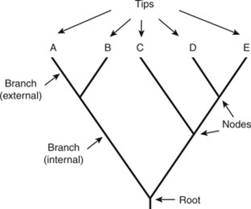
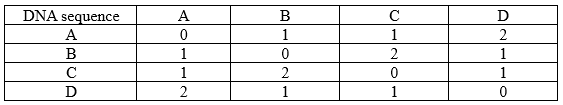
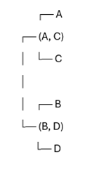

Phylogenetic Tree Reconstruction Using the Fitch-Margoliash (FM) Algorithm
Introduction
According to evolution theory, the evolution of new organisms is driven when a DNA sequence is changed due to the insertion or deletion of bases of DNA segments (mutation). Speciation results in the formation of different species, and these species will share a common ancestor. A phylogenetic tree is a graph that represents approximate distance between a set of objects such as species, genes or families in a hierarchical fashion. Generally, a phylogenetic tree is critical in biological research as it represents the evolutionary relationship between different species or gene families. The graphical representation, like a tree, illustrates the evolutionary and phylogenetic relationships between biological data based on their physical appearance and genetic characteristics. The root represents the common ancestor of all entities in the tree. The leaves (tip) of the tree represent the sequence in the species, internal nodes are the hypothetical common ancestors, and the branch or edge length represents evolutionary distances. A phylogenetic tree is also known as a cladogram, tree of life, or evolutionary tree.
Figure 1. Representation of a phylogenetic tree
(Scott AD, Baum DA. Phylogenetic Tree. In: Encyclopedia of Evolutionary Biology. Elsevier Inc.; 2016. p. 270–6)
The phylogenetic trees are classified into different types based on their structure and the information they represent. In the rooted tree, the single ancestral lineage represents the common ancestor, from which all other nodes originate and descend. In unrooted trees there is no common ancestor but the relationships between the species depends on the connection between different nodes. The cladograms depict the order of the branches without representing branch lengths and illustrate the relative relationships among species. The typical phylograms indicates branch lengths that represent the extent of evolutionary distances. In bifurcating trees, the internal nodes produce exactly two descendant nodes, representing a dichotomous division. In multifurcating trees the internal nodes that give rise to multiple descendants, representing simultaneous divergence events.
Theory
Need for algorithms in bioinformatics to construct phylogenetic trees
The genetic sequences are DNA strings formed by combining four nucleotides A, T, C, and G. Various string processing algorithms are reported that can quickly analyse these DNA and RNA sequences to build a phylogeny of sequences or species based on their similarity and dissimilarity. Algorithms are crucial in bioinformatics for phylogenetic tree construction because they help in efficient analysis of large datasets and to infer evolutionary relationships between organisms or sequences by comparing their genetic data. Alignment-based methodologies are the most widely used tools in biological sequence analysis for constructing phylogenetic tree. The comparison of sequences reveals the history pattern between species and the prediction of ancestral states, and to understand the biology of the genome sequence of the organism to find similarities and relationships between the species. Sequence alignment is a method to identify homologous sequences and is classified as pairwise alignment, where only two sequences are compared, and in multiple sequence alignment, more than two sequences are compared. These alignment-based algorithms can also be used with distance methods to express the similarity between two sequences and to find phylogenetic relationships. There are two main categories of methods used for phylogenetic tree inference.
1. Distance-based methods
This method relies on pairwise sequence alignment of the biological sequence. In this method, the molecular feature matrix is first converted into a distance matrix to represent the evolutionary distances between pairs of species. Later, it is combined with clustering algorithms to analyse the species under study to infer the phylogenetic tree. The representative methods in this category included Neighbour-Joining (NJ), Unweighted Pair Group Method with Arithmetic Mean (UPGMA), Minimum Evolution (ME) Method, and Fitch-Margoliash (FM) Algorithm.
The distance-based approach was less sensitive to variations in evolutionary rate compared to cluster analysis. It can handle multiple sequences at a time and provide an approximate estimate of phylogenetic relationships.
2. Character-based methods
Unlike distance-based methods, the character-based methods depend on individual nucleotide or amino acid positions to infer evolutionary relationships. The representative methods included Maximum Parsimony (MP), Maximum Likelihood (ML) and Bayesian Inference (BI). These methods generate many hypothetical trees before producing the optimal tree.
Fitch-Margoliash (FM) Algorithm
This algorithm was developed by Walter Fitch and Emanuel Margoliash in 1967. It is a distance-based method based on the least squares principle for phylogenetic tree reconstruction. It seeks to reduce the difference between the given pairwise distances (observed data) and the distances in the resulting tree. It produces unrooted trees, and closely related sequences are given more weight in the phylogenetic tree construction for measuring the distance between distantly related sequences. The additive tree will be constructed where the sum of branch lengths between any two taxa should approximate the observed distance. It is a bottom-up approach, that clusters taxa based on their distance matrix through iterative steps. The algorithm estimates the total branch length (distance) and clusters by the taxa pair to determine the unrooted tree with minimum distance.
The FM algorithm methods select the best tree among all possible trees based on the minimal deviation between the distances calculated in the overall branches in the tree and the distances in the original dataset. It starts by randomly clustering two taxa in a node describing distances and then solving the unknown branch lengths. The clustering creates a new reduced matrix and is iterated until a tree is completely resolved. This method searches all tree topologies and selects one that has the lowest squared deviation of actual distances and calculated tree length.
Algorithm Steps
1. Start with a Distance Matrix
The input for the Fitch Margoliash algorithm is a symmetric matrix of pairwise distances between taxa such as genetic or evolutionary distances.
2. Identifying a closest pair
The algorithm identifies the two taxa with the smallest distance and assumes they share a common ancestor.
3. Branch length calculation
It estimates the branch lengths based on a least-squares approach, resulting in a newly formed node (ancestor). These branch lengths are connected to taxa based on their common ancestor in the phylogenetic tree.
4. Re-arranging the distance matrix
Here, the original taxa are replaced with newly formed ancestor, and the distance matrix is recalculated. The taxa are replaced with their new ancestor and new distances are computed. This step reduces the size of the matrix by one row and one column.
5. Repeat the process until a single node exists
Each new ancestor is treated as a taxon and follows the steps to merge the closest pairs for updating the distances. The process continues iteratively until all taxa are connected into a single tree. In the final phylogenetic tree, the evolutionary relationships were observed based on pairwise distance and the internal nodes represent common ancestors in the taxa.
Example of Fitch-Margoliash (FM) Algorithm
Suppose there are four species (A, B, C, and D) with the following DNA sequences:
. Species A: ACTGGA
. Species B: ACTGCA
. Species C: TCTGGA
. Species D: TCTGCA
To apply the FM algorithm, the first step is to calculate the genetic distance between each pair of species, that is, distance matrix calculation. Finding out the number of differences between the given DNA sequence is the best way to find the genetic distance.
• A vs B: "ACTGGA" vs "ACTGCA" → 1 difference (G)
• A vs C: "ACTGGA" vs "TCTGGA" → 1 difference (A)
• A vs D: "ACTGGA" vs "TCTGCA" → 2 differences (A and G)

Apply the Fitch-Margoliash Algorithm
The first step is finding the closest pair (smallest distance).
From the table it is observed that smallest distance = 1 (between A & B, A & C, B & D, C & D).
Assume A and C as the first cluster.
The next step is to Recalculate Distances. Using the least-squares formula, recalculate the distance between the new cluster (A,C) and the remaining B and D species.
(A,C) to B = (1+2)/2 = 1.5
(A,C) to D = (1+2)/2 = 1.5
Repeat for steps for the next closest pair
The smallest distance is 1.5 (between (A, C) and (B or D). Join B and D into a cluster. In the last step merge the final clusters. In this case merge (A, C) and (B, D) into a final tree (Figure 2).

Figure 2. Representation of phylogenetic tree. A and C are closely related, and B and D are closely related. (A, C) and (B, D) form the evolutionary structure
Applications of phylogenetic trees in modern science
• It helps to understand the evolutionary relationships between species and to understand the divergence of species evolution from a common ancestor over time.
• Classification of organisms based on genetic similarities.
• Identifying the new variants of disease-causing organisms such as viruses and bacteria based on phylogenetic classification.
• Drug development and DNA fingerprinting.